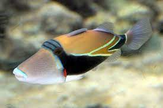

The Reef Triggerfish
By Ryan ConleyPosted on
The official state fish of Hawaii, the Reef Triggerfish, has
a name and appearance that are quite unique relative to other
sea creatures. The reef triggerfish sports a variety of different
colors from gold on the top side of their bodies, a black stripe
that runs down the middle, a blue tint around their mouths and a
white underbelly. These fish have strong jaws and sharp teeth which
allow them to pick off food easily from coral reefs. They primarily
eat algae, snails, and other small organisms to which their teeth are
extremely lethal. When selecting a name for this odd creature, local
tribes took note of its odd snout and appropriately called it
humuhumunukunukuapuaa, which in their language means
triggerfish with a snout like a pig
. It certainly is an interesting
name, but Reef Triggerfish is definitely easier to pronunciate.
In order to get a glimpse of this amazing fish, you will have to take
a trip to a country along the Pacific ocean as they are primarily found
there. I personally got to encounter this fish on a visit to Hanauma Bay,
a state park in Hawaii. Hanauma Bay is located on the island of Oahu and I
highly recommend a visit there.
